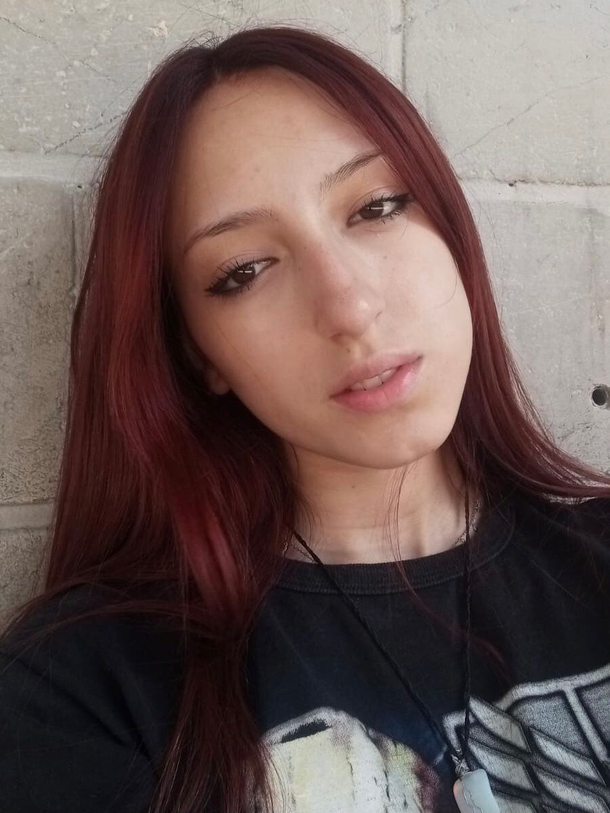
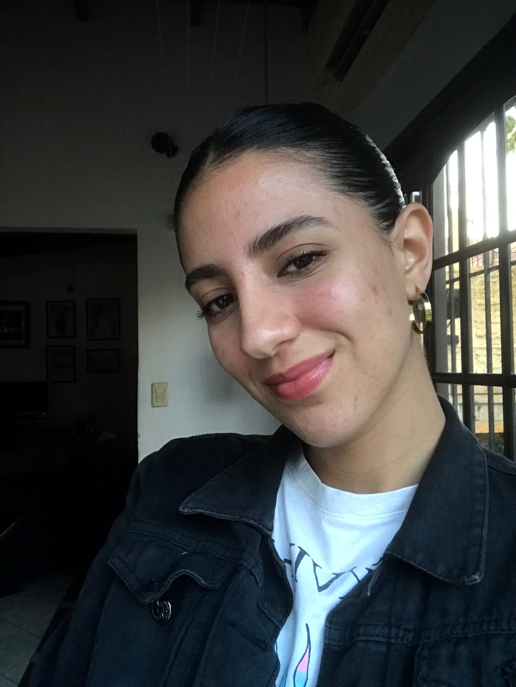

Creadoras del trabajo final
NAHIR NEGRO
Me llamo Nahir Negro, tengo 19 años y curse tecno dos veces. La primera vez llegue hasta más de mitad de año pero sentía que no sabía mucho, así que preferí empezar de 0 y aprender mejor todos los temas
BRENDA REYES
Amo diseñar acompañada de buena musica y unos mates. Nacíel 16 de octubre y tengo 20 años. Vivo en La Plata desde siempre. No hay mejor música para mi que no sea rock nacional y WorshipMusic. Tambien amo tocar el piano y cantar en mi iglesia.